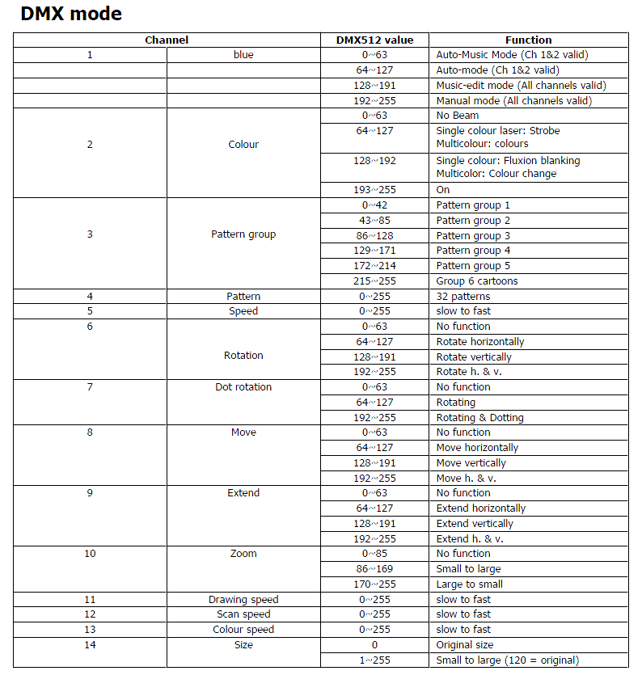

Tutorial Laser - LaserWorld RS-200G
Here is a small guide on how a laser fixture can be made.
Lasers can be quit complex to make a fixture for. This is not a guide that shows the only way but more showing one way.
Also this fixture type is not made perfect in the first try in this one there are room for improvements.
The guide assumes that the reader are familiar with the basics in creating fixtures. If not, then it is recommended to read some of the other tutorials though they are not related to lasers but more the basics in creating a fixture.
Note:
In the end of this page there is an “Alternative” section on what is missing and what could be done differently.
Before starting, get an image of the fixture in the right size and the manual.
Lasers without a manual / DMX table can be quite difficult to figure out.

Having a look on the DMX table it is important to get an idea of how the controls can be placed.
One thing to note is that image / pattern control consist of 2 settings. A bank and an image control.
This gives that the image control changes for each bank.
The ideal solution is to place this as macros because a macro by pressing one icon can set the values for more channels.
The gobo control can then be used for function control.
Open Fixture Creator in Custom mode.
Enter:
Manufacturer: LASERWORLD
Fixture name: RS200G-1
Add the fixture image.
The name RS200G-1, (-1) is taken from a short calculation of how many images that a needed and a decision of that this has to be split in 2 fixtur so it will be used as a combined fixture.
Total Channels: 14
In the DMX table on channel 2 there is a Beam on / off function.
This is placed on the Shutter so it is possible to switch the beam.
The same channel has a strobe and a fluxion blanking function. They are omitted here but can also be placed on controls if this is wanted.
The laser has a size control on channel 14 and this is placed on the fixture zoom control.
Note that the laser zoom channel 10 is a macro control.
As mentioned above some of the function control can be placed on the gobo control because all image control is placed as macro.
Gobo wheel 1
Here rotation control is added and on rotation control for 1st. gobo when the speed control is placed.
They are logical related.
2nd Gobo wheel
On channel 6 there are an additional rotation control.
This rotation control is more a wrapping imaging so the image is mirrored or turned up side down.
This maybe “has to be seen” to understand.
3rd gobo wheel.
On this gobo wheel a movement control, channel 8, is placed.
The movement control is macro of how the image moves in horizontal or vertical direction. If it has been a XY control then it would have been placed on the pan / tilt control.
1st color wheel.
On channel 1 there is a mode control which determine if the fixture runs in an auto mode with music control and so on this is placed in this control.
Macro
The control of the images / patterns is a bit complex because of the control split on bank and image.
There is not given any exact values for the shifts so this is the way it was done.
The fixture was saved and added FreeStyler.
The fixture connected to FreeStyler and turned on.
By moving the two “Right side sliders” for bank and pattern the shift values was recorded.
The bank slider was placed in a fixed positions and the image slider was slowly moved.
Each shift value was recorded.
The mid values was calculated and entered in the macro table. Each value was given a number icon.
The fixture was then saved, FreeStyler and the laser turned on again. The laser was placed so the image was projected on a black curtain and a camera placed so some decent pictures could be made.
For each image a picture was taken, cropped and sized so it matches the icon size and they were added to the fixture macros.
Fixture part 2, RS200G-2.
Enter:
Manufacturer: LASERWORLD
Fixture name: RS200G-2
Add the fixture image.
Total Channels: 14
In this fixture only the macros is defined.
Note: The other functions from fixture one can be duplicated in this fixture but they have to be a true copy.
{kind=link}
{kind=link}
{kind=link}
{kind=link}
{kind=link}
{kind=link}
{kind=link}
{kind=link}
{kind=link}
Alternative
The first thing to note is that this fixture was made before “Show in” was available in the macro section. This function makes it possible to make this fixture in a different way.
There are some speed controls that are not placed on a direct control function. These controls are best on faders because they have to be fine adjusted.
In this fixture these controls can be accessed via the “Right side sliders”.
Now:
Since the images are so many that they have to be split on 2 fixtures more images could be moved to fixture 2.
This will release space for more macros so something like Mode could be placed there with a “Show in”.
A move of the mode will make it possible to have Zoom macro control on 1st color wheel.
The Drawing, Scan and Color speed are best placed on faders this could also be placed on color wheel 1 and 2.
One thing to note is that these speeds may just have to be adjusted once and then never again. So the decision of placing them on “Right side sliders may be an ok solution.
Many control channels have one function in one end of the values and another function in the other end.
One way to make this control easier is to place some icons in the beginning and end of the function.
A control like “move” has a speed control and a direction control in the same range.
128 slow move Vertically.
160 mid move Vertically.
191 fast move Vertically.
By placing this on a gobo control channel and then have one or more gobos, slow, mid and fast, then by one press on the icons bring the value inside Vertically movement and it is then possible to fine adjust the value on the fader.
{kind=link}